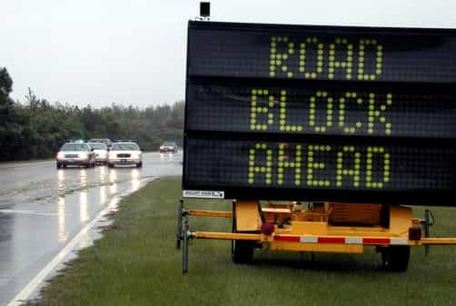
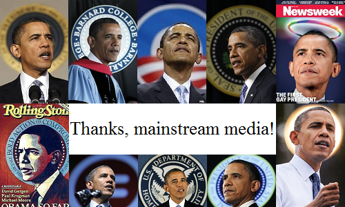

< < < Back
The Story Behind The 2008 Financial Crisis – Return Of Kings
The subprime mortgage crisis emerged in 2007, driving down the stock market late in the year. 2008 began with the economy in freefall, the stock market finally hitting rock bottom in early 2009. By then, the world economy was in turmoil from the shock waves. How did the troubles in one sector of the US economy touch off such a global financial meltdown?
The prelude

President Niceguy standing for the Cuban national anthem by his pal Fidel
In 1977, President Carter signed the Community Reinvestment Act, intended to help low-income borrowers and end discriminatory practices. This has been modified several times over the years, notably during the Clinton years. These changes gave it some real teeth. The first warnings were unheeded. For example, as the New York Times put it even as early as 1999, while the economy was roaring:
In a move that could help increase home ownership rates among minorities and low-income consumers, the Fannie Mae Corporation is easing the credit requirements on loans that it will purchase from banks and other lenders. […]
These borrowers whose incomes, credit ratings and savings are not good enough to qualify for conventional loans, can only get loans from finance companies that charge much higher interest rates—anywhere from three to four percentage points higher than conventional loans. […]
In moving, even tentatively, into this new area of lending, Fannie Mae is taking on significantly more risk, which may not pose any difficulties during flush economic times. But the government-subsidized corporation may run into trouble in an economic downturn, prompting a government rescue similar to that of the savings and loan industry in the 1980’s.
“From the perspective of many people, including me, this is another thrift industry growing up around us,” said Peter Wallison a resident fellow at the American Enterprise Institute. “If they fail, the government will have to step up and bail them out the way it stepped up and bailed out the thrift industry.”
So the government pressured the financial industry to accept loans from people whose credit ratings made them bad risks—what’s the worst thing that possibly could happen…? Carter and Clinton might have had the best intentions in mind, to help more people achieve the “American dream” of home ownership. However, this turned out to be a mistake; feel-good politics isn’t always good business.
Also during this time, the Gramm-Leach-Bliley Act gutted the Glass-Steagall Act of 1933. During the aftermath of the Great Depression, it mandated separation between commercial banking and investment banking, a protective firewall to help prevent another similar financial disaster. Again, what’s the worst thing that possibly could happen…?
Thwarted efforts at reform

They were warned, but…
By 2003, the White House proposed measures to fix this unstable situation in the works. Again per the New York Times:
The Bush administration today recommended the most significant regulatory overhaul in the housing finance industry since the savings and loan crisis a decade ago. […]
Significant details must still be worked out before Congress can approve a bill. Among the groups denouncing the proposal today were the National Association of Home Builders and Congressional Democrats who fear that tighter regulation of the companies could sharply reduce their commitment to financing low-income and affordable housing.
“These two entities — Fannie Mae and Freddie Mac — are not facing any kind of financial crisis,” said Representative Barney Frank of Massachusetts, the ranking Democrat on the Financial Services Committee. “The more people exaggerate these problems, the more pressure there is on these companies, the less we will see in terms of affordable housing.”
Further warnings went unheeded. In 2005, Federal Reserve chief Alan Greenspan warned:
“[If Fannie and Freddie] continue to grow, continue to have the low capital that they have, continue to engage in the dynamic hedging of their portfolios, which they need to do for interest rate risk aversion, they potentially create ever-growing potential systemic risk down the road,” he said. “We are placing the total financial system of the future at a substantial risk.”
Meanwhile, Democratic Senator Chuck Schumer was saying:
I think Fannie and Freddie over the years have done an incredibly good job and are an intrinsic part of making America the best-housed people in the world… if you look over the last 20 or whatever years, they’ve done a very, very good job.
Problem? What problem?
Because of this political resistance, the regulatory reforms over Fannie Mae and Freddie Mac never came to pass. In 2006, Senator John McCain co-sponsored a reform bill, the Federal Housing Enterprise Regulatory Reform Act of 2005, which got blocked in committee by all its Democratic members.
How it all went down
The “new normal”, coming right up
Also, the banks were also under pressure from lawsuits. This included Buycks-Roberson v. Citibank Federal Savings Bank in 1994, a racial discrimination suit. As it happens, Obama (then an attorney) represented ACORN. Following all this, acceptance standards and fact-checking became quite lax, leading to the term “liar loans.”
So the banks, under pressure from both the government and civil rights lawsuits to issue loans to anyone with a pulse, came up with creative ways to offset the losses. Predatory lending practices began, such as zero principal loans, which never get paid off (might as well just rent). Also, they turned bundles of mortgages into investment securities, which they had the power to do with the Glass-Steagall firewall gone. These became the hot, new investment in the USA and abroad.
These securities got re-packaged into others, sometimes well over a dozen times; thus it was pretty hard for an investor to make an informed decision. There were credit rating agencies, but their criteria were pretty lax too; they weren’t getting paid to call investments crappy. The subject of derivatives is a bit complex, but credit default swaps are basically investment insurance policies. In good times, it’s gravy for the issuers, but when the investment loses money, the issuer covers the loss.
A prime rate interest hike touched off the powderkeg. Many borrowers were on adjustable rate mortgages, which was (and still is) another sucker deal. So the borrowers—many of whom could barely afford their house notes—got their mortgage payments jacked way up, and they defaulted in droves. The glut of houses now for sale drove the prices way down. That put many borrowers underwater, unable to get out without incurring a loss. As for the bundled investments, their value plummeted. AIG (which issued most of the credit default swaps) got clobbered into insolvency.
Then the stock market tanked. Panicked investors sold at a loss, driving the market further down. The banksters turned to the government like hungry piglets wanting some milk from mama sow. “Too big to fail” was the watchword. The government responded with the Troubled Asset Relief Program. The TARP beneficiaries included AIG and fifteen other financial institutions, along with GM and Chrysler (the only companies among them that actually produce anything). One could argue that it was necessary; on the other hand, rewarding people for making bad decisions sets a lousy precedent.
I haven’t followed all of them, but as I’ve mentioned previously, one of the megalo-banks used the bailout money to buy out a failing competitor and invest in the stock market when it hit bottom, massively profiting from the move. The financial industry has a cute abbreviation—OPM—which means “Other People’s Money”. In that case, the leverage came from the taxpayers. Awesome gravy! Some years later, they got their fingers burnt to the tune of a few billion on credit default swaps, proving that they hadn’t learnt a thing from that escapade of casino capitalism.
The political aftermath

Turning lemons into lemonade
The public largely held the Republicans responsible for the mess—Bush the Younger in particular—though the previous administration’s overenthusiastic policies set the groundwork. I wouldn’t lay the blame solely on Slick Willie either; the President is important, but isn’t the only figure shaping policy. Congress passes bills, and the President either signs or vetoes them.
Administration figures play a role too. Those encouraging the removal of the Glass-Steagall firewall included Robert Rubin and John Podesta. For those not familiar with them, Podesta is quite a colorful figure, filling a number of duties in the Clinton administration, a counselor under the Obama administration, and most lately as Hillary Clinton’s campaign chairman. Washington is a pretty tightly-knit family.
Rubin worked for Goldman-Sachs from 1966 until 1992. He joined the Clinton administration in 1993, serving as Secretary of the Treasury from 1995 through 1999. While in office, Rubin also opposed regulation of derivatives such as credit default swaps and collateralized debt obligations. In 1997, he became a co-chairman of the Council on Foreign Relations and still holds the position. After leaving the Clinton administration, he joined the Board of Directors of Citigroup. Wall Street seems to be the kissing cousin of Washington.
During the Presidential campaign under way, the Democrats benefited greatly from the public’s perception that the Republicans were at fault, carrying The Lightworker across the finish line. I recall Obama accusing McCain during one of the debates of wrecking the economy. How’s that for audacity?
The financial aftermath
Where did all that wealth go that had been built up for years?
Quantitative easing was another measure the government used to prop up the economy. In the first round, the government ended up buying over two trillion in treasury bills, bank debt, and those toxic mortgage securities. Round two included buying up $600 billion more T-bills. During 2012, round three began, in which the government started buying $40 billion in mortgage-backed securities every month. That finally tapered down and ended in 2014.
It did artificially prop up the economy, but was an inflationary pressure. Due to fuzzy math, official inflation figures don’t reflect the full impact of rising prices on the public. (One of the tricks is that some categories don’t count, like food, fuel, insurance, construction materials, etc.; it’s not like anybody actually needs those, right?) All the bailouts and buying up of assets drove the national debt sky-high, as if it wasn’t bad enough previously. That may yet be the next catastrophe in the works; something that famously came to pass for Greece.
Years later, Wall Street did recover, and the stock market is reaching new highs. However, Main Street still hasn’t recovered. Jobs did come back, but mostly in other countries, thanks to globalism and “offshoring.”
As has happened so many times, the government instituted feel-good policies and the general public had to suffer the consequences of the social engineering. As for the banksters, once again they made some bad decisions, yet came out ahead after they crashed the economy, while effectively strip-mining the middle class. (I have to wonder how the Founding Fathers of the American Revolution would’ve responded.) Part of draining the swamp must include breaking up the Washington-Wall Street puppy pile fueled by connections and campaign contributions.
Read More: How The Deep State Operates